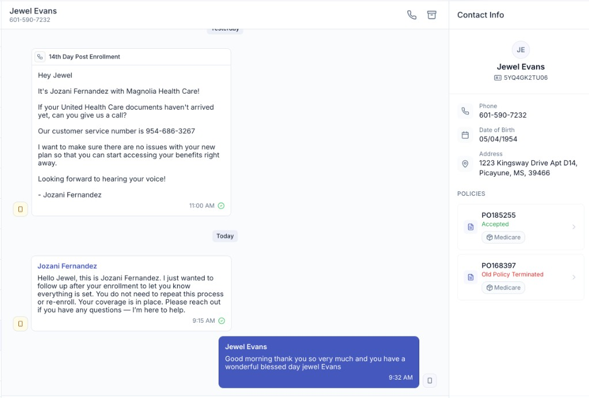
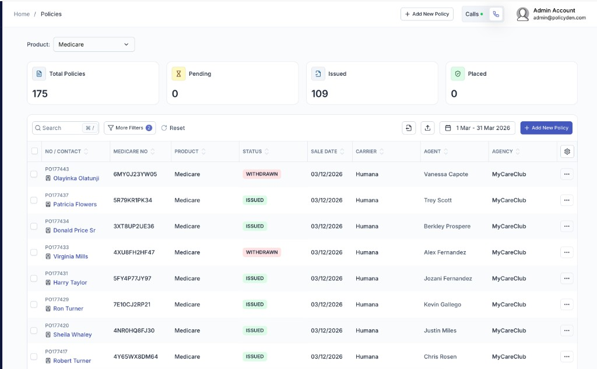
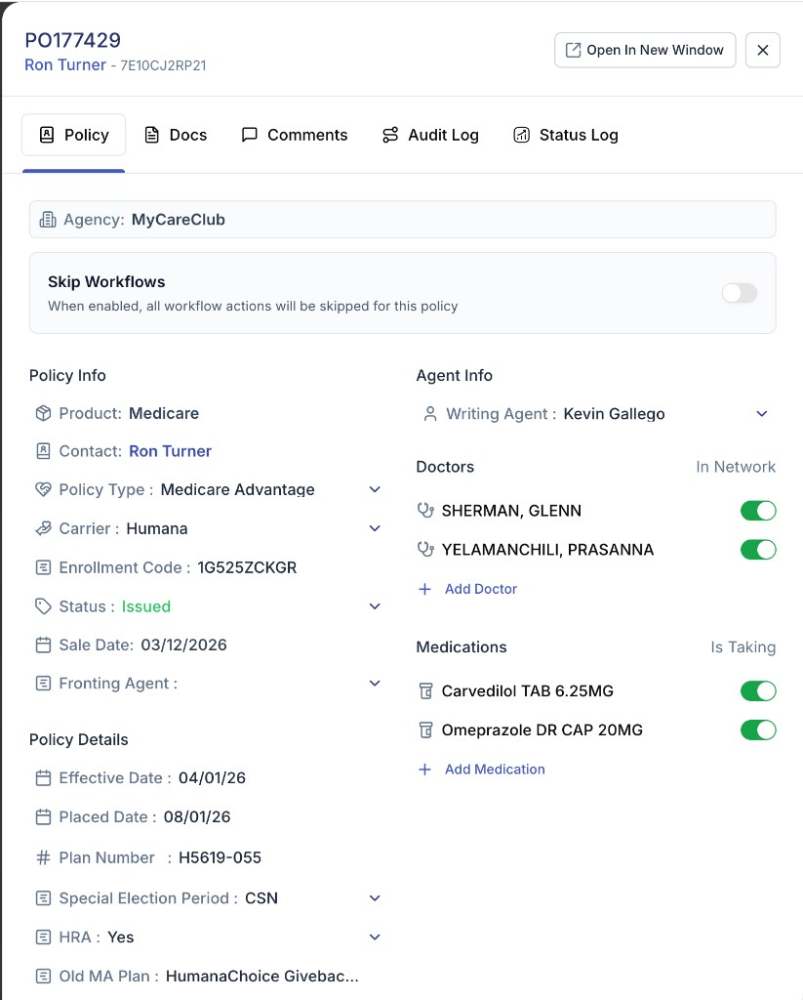
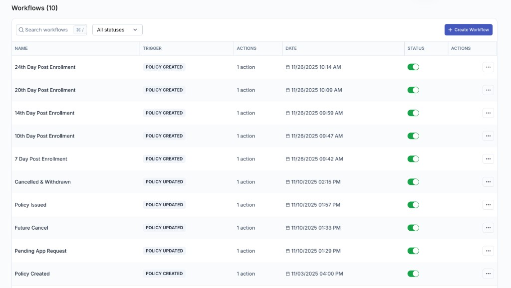
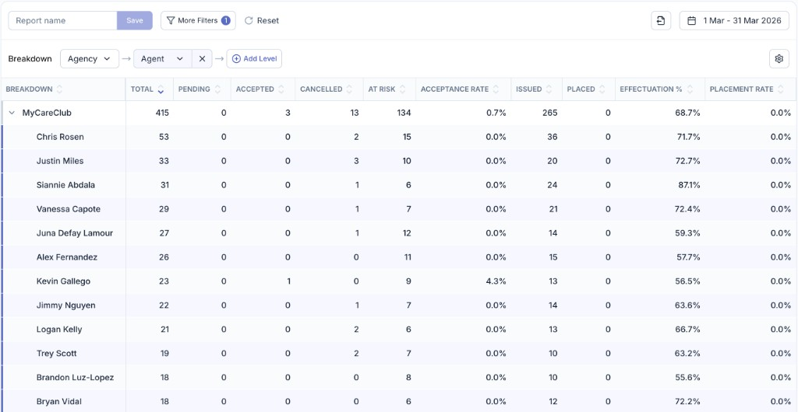

Executive Summary
MyCareClub's end-to-end compliance, quality assurance, and member experience framework across all operational departments. This document serves as a comprehensive overview of our organizational controls, procedures, and continuous improvement infrastructure.
Three-Pillar CTM Reduction Strategy
Core FrameworkDepartment Responsibilities
- ✓Sales — Needs-based enrollment, CMS-compliant call handling, election period verification
- ✓Customer Service — Post-enrollment retention, member issue resolution, escalation management
- ✓Quality Assurance — Independent call evaluation, scorecard grading, compliance risk identification
- ✓Compliance — CTM mitigation, grievance handling, corrective action plans, carrier liaison
- ✓Human Resources — Licensed agent hiring, onboarding, credentialing, continuing education
- ✓Operations — Technology infrastructure, data security, call recording, CRM management
- ✓Technology — PolicyDen CRM platform, enrollment lifecycle management, automated compliance workflows, audit trail
- ✓Legal — Regulatory monitoring, contract management, HIPAA/privacy, carrier compliance
Compliance Infrastructure
- ★Centralized Agent Dashboard — Notion-based performance tracking with QA scores, CTM counts, compliance flags, and trend analysis
- ★Standardized QA Scorecard — 42-criterion weighted evaluation covering opening, needs assessment, benefits, application, and closing
- ★Progressive Discipline Protocol — 5-stage escalation from coaching through termination with full documentation at every stage
- ★AEP/OEP Elevated Protocols — Enhanced review cadence, shortened outreach windows, and weekly CTM monitoring during peak enrollment
- ★Closed-Loop Grievance System — Every carrier complaint auto-routes to agent record, triggers QA review, and feeds back into coaching
Sales
Licensed Medicare Advantage and MAPD enrollment operations. Every sales interaction follows CMS-mandated procedures, carrier-specific requirements, and MyCareClub's internal quality standards to protect members and maintain carrier standing.
Every MA/MAPD enrollment call follows this standardized sequence. Deviation from any step is flagged by QA and may trigger a Corrective Action Plan.
Any of the following triggers an automatic -40 point penalty on the QA scorecard and immediate compliance escalation. Single-incident violations may result in a CAP regardless of overall score.
- ✓Agents must actively identify beneficiary's priority healthcare needs before presenting any plan
- ✓Plans presented objectively — no steering, no high-pressure language, no bias toward higher-commission products
- ✓All questions and concerns addressed transparently to build trust with the beneficiary
- ✓Agent must confirm beneficiary clearly understands the plan benefits discussed before proceeding to application
- ✓Coverage impact explained: disenrollment consequences, coordination of benefits, penalties, TRICARE/VA interactions
- ✓Professional, respectful, neutral tone maintained throughout — no urgency or scarcity tactics
- ✓MAPD enrollments: formulary, pharmacy network, cost-sharing, tier levels, and non-formulary drugs explicitly addressed
- ●AEP (Oct 15 – Dec 7) — Standard enrollment window. Enhanced QA protocols active. Same-day scorecard turnaround first 2 weeks.
- ●MA-OEP (Jan 1 – Mar 31) — Plan-to-plan switches only for existing MA enrollees. No Original Medicare election. Agent must verify current MA enrollment.
- ●SEPs — Agent must document valid qualifying event. Improper SEP use is a Red Flag indicator triggering automatic compliance escalation.
- ●IEP / ICEP — Initial enrollment periods verified through MARx. Part A/B effective dates confirmed before proceeding.
- ●All election period determinations are subject to QA review. Invalid election periods result in immediate enrollment rejection and agent coaching.
Customer Service
Two-tier licensed support structure serving as the operational bridge between members, agents, and carriers. Our CS team proactively prevents member dissatisfaction from escalating to carrier complaints through rapid response, documented outreach, and structured escalation.
Organizational Structure
Two-Tier Licensed3-Tier Escalation Framework
Critical- ✓All new MA/MAPD enrollees receive SMS or call within 3 business days confirming plan understanding, effective date, and PCP
- ✓MAPD enrollees: pharmacy and drug coverage specifically re-confirmed during outreach
- ✓High-risk enrollments flagged for priority 24-hour outreach: significant coverage changes, dual-eligible, complex drug regimens
- ✓AEP enrollments involving plan change from prior year: outreach window shortened to 24 hours
- ✓All unresolved SMS threads older than same business day auto-escalated to supervisor
- ✓Every outreach interaction documented in CRM with timestamp, topics covered, member response, and follow-up actions
- ●Every member interaction logged in CRM same day — no exceptions
- ●Documentation includes: member name, issue category, actions taken, resolution status, follow-up required (Y/N), and timestamp
- ●Escalation events include supervisor notes, timeline commitments to member, and compliance notification if applicable
- ●Records retained for required retention period and available for carrier or CMS audits on demand
Quality Assurance
Independent control function responsible for monitoring, evaluating, and documenting agent interactions. QA operates under strict governance — it does not interpret policy, approve enrollments, or submit external responses. Evaluations are objective, standardized, and fully audit-defensible.
Scoring Methodology
Non-Discretionary- ★All criteria are predefined and fixed — QA analysts cannot introduce new scoring standards
- ★A call is only marked failed when a specific, predefined failure criterion is met
- ★Compliance risk flags are documented independently of pass/fail scorecard outcomes
- ★Consumer Experience scoring is completely separate from compliance pass/fail — used for coaching only
Consumer Experience (CX) Scoring
Coaching Tool| Dimension | Scale |
|---|---|
| Needs Identification & Active Listening | 0–3 |
| Needs-Based Presentation | 0–3 |
| Trust & Question Handling | 0–3 |
| Comprehension Confirmation | 0–3 |
| Coverage Impact Explanation | 0–3 |
| Tone, Professionalism & Neutrality | 0–3 |
- ●QA operates within a controlled scope and does not create policy
- ●QA does not approve enrollments or determine eligibility
- ●QA does not submit external carrier or CMS responses
- ●QA does not engage in carrier communication
- ●All compliance risks escalated through formal chain of command
- ●Low-scoring or high-risk cases may undergo secondary QA leadership review
- ●All records retained for audit readiness and regulatory review
Compliance
Central enforcement and monitoring function responsible for CTM mitigation, grievance management, corrective action plans, agent performance oversight, and carrier relationship compliance. Compliance owns the closed-loop system that prevents member dissatisfaction from escalating to formal complaints.
Corrective Action Plan (CAP) Process
EnforcementAgent Performance Dashboard
Centralized Notion dashboard tracking the following metrics per agent, reviewed monthly by Compliance Manager:
- ★Total MA/MAPD policies written (rolling 90-day window)
- ★CTM count and CTM rate (%) against policy volume
- ★90-day CTM trend (increasing / stable / decreasing)
- ★Rapid disenrollment rate (members who disenroll within 90 days)
- ★QA scorecard average and compliance flag count
- ★Active CAP status and monitoring milestones
Grievance Handling Workflow
Human Resources
Responsible for recruiting, credentialing, onboarding, continuing education, and performance management of all licensed agents and support staff. HR ensures every individual representing MyCareClub meets state licensing, carrier certification, and CMS training requirements before engaging with any beneficiary.
- ✓Active state health insurance license verified before any carrier appointment is initiated
- ✓Background check completed pre-hire — criminal history, prior regulatory actions, and carrier termination history reviewed
- ✓AHIP Medicare certification completed and verified annually before AEP
- ✓Carrier-specific certifications completed for each product line the agent will sell (Humana, UHC, Aetna, etc.)
- ✓E&O (Errors & Omissions) insurance coverage verified active before first enrollment
- ✓NPN (National Producer Number) validated against NIPR database
- ●Week 1: CMS regulatory framework, MyCareClub Compliance SOP, prohibited practices, and required disclosures
- ●Week 1: Carrier-specific product training — plan benefits, formularies, network structures, and enrollment procedures
- ●Week 2: QA scorecard walkthrough — every criterion reviewed with pass/fail examples from real (anonymized) calls
- ●Week 2: Live call shadowing with senior agent. New hire observes minimum 10 enrollment calls before taking live calls.
- ●Week 3: Supervised live calls with real-time QA monitoring. Every enrollment scored. Immediate coaching on deviations.
- ●Ongoing: Monthly compliance refresher modules. Mandatory re-certification before AEP if returning from inactive status.
- ★State CE credits tracked and verified — no agent operates with an expired or lapsed license
- ★Annual AHIP re-certification required. Completion tracked in HR system. Non-compliant agents suspended from sales.
- ★Carrier certification renewals tracked per product line and per plan year
- ★Quarterly compliance training sessions mandatory for all agents — attendance documented
- ★Agents returning from inactive status complete full compliance re-certification before any live enrollment activity
- ●Terminated agents removed from all carrier hierarchies within 24 hours
- ●System access (CRM, dialer, enrollment platforms) revoked immediately upon termination
- ●Termination documented with cause, supporting evidence, and compliance review outcome
- ●Active book of business reassigned with member notification as required by carrier agreements
- ●Termination records retained for required period and available for carrier/CMS audit
Operations
Technology infrastructure, data management, call recording, CRM administration, and workflow automation. Operations maintains the systems that enable every other department to function with auditability, reliability, and security.
| System | Function | Compliance Role |
|---|---|---|
| Convoso | Dialer — inbound/outbound calls | Call recording, disposition tracking, TCPA compliance, DNC management |
| PolicyDen (Supabase) | CRM — policies, contacts, enrollments | Full enrollment lifecycle, status tracking, agent attribution, audit trail |
| Notion | Agent performance dashboards | QA scores, CTM tracking, CAP status, compliance flags, trend analysis |
| MCC-AI Platform | Automated reporting & analytics | Hourly sales reports, cross-system data integration, compliance monitoring |
| Slack | Internal communications | Real-time compliance alerts, automated report distribution, escalation notifications |
- ✓100% of calls recorded — both inbound and outbound, across all campaigns and queues
- ✓Recordings retained for minimum period required by CMS regulations and carrier agreements
- ✓Recordings accessible to QA team for scorecard evaluation and compliance review
- ✓Recordings retrievable for carrier or CMS audit requests within 24 hours
- ✓Call metadata (duration, disposition, agent, campaign, timestamp) stored and queryable for compliance reporting
- ●Role-based access controls (RBAC) across all systems — agents, supervisors, QA, compliance, and admin have distinct permission levels
- ●PHI/PII access restricted to licensed personnel with active carrier appointments
- ●MARx access controlled — agents must obtain verbal permission before accessing beneficiary eligibility data
- ●System access revoked within 24 hours of agent termination or status change
- ●Data encryption in transit and at rest for all member-facing systems
- ●Audit logs maintained for all system access and data modifications
- ★Hourly automated sales reports posted to Slack — call volume, success rates, deals closed, marketing spend, and agent rankings
- ★Daily aggregation of call data, disposition analysis, and agent productivity metrics
- ★Cross-system data integration: Convoso (calls) + PolicyDen (deals) + WeGenerate (marketing spend) unified in single reporting layer
- ★Anomaly detection for unusual patterns: spike in specific dispositions, rapid disenrollments, or agent-level CTM clusters
Technology — PolicyDen CRM
MyCareClub's enrollment lifecycle, member communications, compliance tracking, and agent performance management are centralized in PolicyDen — a purpose-built CRM for Medicare Advantage operations. Every policy, text message, status change, and workflow action is documented with a full audit trail.

Post-Enrollment Text Messaging
This is the built-in SMS module inside PolicyDen. Agents use it to send structured post-enrollment follow-up messages directly to members — confirming their plan is set, checking if documents arrived, and offering help with any questions.
- Full conversation thread view with sent/received messages and timestamps
- Contact info panel on the right showing phone, DOB, address, and linked policies with current status
- Automated outreach templates triggered at 7, 10, 14, 20, and 24 days post-enrollment
- Every message is permanently logged and tied to the member's policy record for audit

Policy Management
The main policies view showing every enrollment with real-time status badges (Issued, Withdrawn, Pending). The top summary cards show pipeline totals at a glance. Each row links to a full policy detail record.
- Filterable by date range, carrier, agent, and status
- Medicare number, sale date, and agency visible per row
- Search and bulk export for compliance audits

Policy Detail Record
Clicking any policy opens this detail panel. It captures the full enrollment profile — carrier, plan number, election period, effective date, and the writing agent — plus the member's doctors and medications with in-network/formulary status.
- Tabs for Documents, Comments, Audit Log, and Status Log
- Doctor in-network toggles and medication tracking
- Workflow controls (skip/enable automated outreach)

Automated Compliance Workflows
This is PolicyDen's workflow engine. Each row is an automated action that fires when a policy event occurs — either a new policy being created or a status change like cancellation or issuance. These workflows drive the post-enrollment outreach sequence and ensure no member falls through the cracks.
- 10 active workflows covering 7, 10, 14, 20, and 24-day post-enrollment outreach
- Status-change triggers for cancellations, withdrawals, issuance, and pending requests
- Each workflow is individually toggleable and shows last-modified date
- Trigger types clearly labeled: POLICY CREATED vs. POLICY UPDATED

Agent Performance & Effectuation Reporting
PolicyDen's reporting module breaks down enrollment metrics by agency and agent. This view shows a March 2026 snapshot for MyCareClub — 415 total policies across all agents, with per-agent columns for every pipeline stage and effectuation rate. Compliance uses this to identify agents with high at-risk or low effectuation rates.
- Multi-level breakdown: Agency → Agent with drill-down
- Columns: Total, Pending, Accepted, Cancelled, At Risk, Acceptance Rate, Issued, Placed, Effectuation %, Placement Rate
- Saveable and filterable report templates with date-range controls
- Exportable for carrier compliance submissions and internal reviews
- ✓Complete audit trail — every policy has a Status Log recording each status change with timestamp, and an Audit Log tracking all modifications to the record
- ✓Comments & documentation — threaded notes on every policy from agents, QA, compliance, and customer service — available for carrier or CMS review on demand
- ✓Document management — SOAs, enrollment applications, and supporting documents attached directly to each policy record
- ✓Role-based access control — agents, supervisors, QA, compliance, and admin have distinct permission levels with PHI access restricted to licensed personnel
- ✓Automated post-enrollment outreach — 10 active workflows ensure every enrollee receives structured follow-up, with all touchpoints logged in the CRM
Legal
Regulatory monitoring, carrier contract compliance, privacy/HIPAA controls, and legal risk management. Legal ensures MyCareClub's operations remain aligned with federal and state regulations, carrier agreements, and industry best practices.
- ✓42 CFR §§ 422.62 / 423.38 — Election period rules monitored and applied to all enrollment procedures. SEP eligibility verified per CMS guidance.
- ✓CMS CY 2026 Enrollment & Disenrollment Guidance — Primary reference document for all election period determinations
- ✓TCPA compliance — Outbound call practices, DNC list management, and consent requirements enforced through dialer configuration
- ✓State insurance regulations — Per-state licensing requirements, marketing rules, and consumer protection laws monitored and applied
- ✓CMS Marketing Guidelines — All member-facing communications reviewed for compliance with CMS marketing and communications requirements
- ●PHI access limited to minimum necessary for job function — role-based access enforced across all systems
- ●Agent permission required before accessing MARx or any beneficiary eligibility system
- ●Data breach response plan documented and tested — notification procedures aligned with HHS requirements
- ●Business Associate Agreements (BAAs) maintained with all vendors handling PHI
- ●HIPAA training included in onboarding and annual refresher for all personnel
- ●Physical and electronic safeguards documented per HIPAA Security Rule requirements
- ★Carrier agreements reviewed upon execution and renewal for compliance obligations, reporting requirements, and termination clauses
- ★Corrective action plan requirements from carriers tracked centrally with response timelines and documentation
- ★Carrier-specific enrollment procedures, documentation requirements, and submission deadlines maintained per agreement
- ★Agent appointment and hierarchy changes communicated to carriers within required timeframes
- ★Carrier compliance bulletins and updates reviewed by Legal and distributed to relevant departments within 48 hours
QA Scorecard — 2026
Standardized 42-criterion weighted evaluation applied to every MA/MAPD enrollment call. Updated April 6, 2026. Scoring is objective, non-discretionary, and audit-defensible.
| Criterion | Weight |
|---|---|
| Opening Call | |
| Agent stated full name and licensed agent/broker status | 2 |
| Stated call is monitored/recorded; obtained permission to call back | 2 |
| Scope of Appointment & TPMO read within 2 minutes of call | 10 |
| "No Obligation to Enroll" read before presenting benefits | 3 |
| Determined beneficiary makes own health decisions or has POA | 2 |
| Confirmed other coverage (Medicaid, TRICARE, VA, Employer) | 2 |
| Asked permission to verify Medicare eligibility before MARx access | 2 |
| Asked permission to verify Medicaid/LIS before MARx access | 2 |
| Needs Assessment — PCP & Doctors | |
| Inquired about PCP | 2 |
| Confirmed PCP is in or out of network | 2 |
| Inquired about specialists | 2 |
| Confirmed specialist is in or out of network | 2 |
| Inquired about hospital | 2 |
| Confirmed hospital is in or out of network | 2 |
| Needs Assessment — Prescriptions | |
| Asked beneficiary for list of medications | 2 |
| Checked prescriptions against formulary | 1 |
| Verified correct name, dosage, and quantity for each prescription | 2 |
| Discussed drug cost details (tiers, copays, non-formulary) | 1 |
| Inquired about preferred pharmacy | 2 |
| Plan Benefit Review | |
| Stated carrier plan name | 2 |
| Premium | 2 |
| Medical deductible (if applicable) | 2 |
| Maximum out-of-pocket (In-Network MOOP only required) | 2 |
| Drug deductible (if applicable) | 2 |
| Part B Giveback — amount and timeframe (if applicable) | 2 |
| PCP copay | 2 |
| Specialist copay | 2 |
| Urgent care copay | 2 |
| Inpatient hospital stay & mental health | 2 |
| Preventive services | 1 |
| Additional Benefits Review | |
| Dental — copays, routine exam, annual allowance/maximum | 2 |
| Hearing — routine exam and hearing aid coverage | 2 |
| Vision — routine exam and glasses coverage | 2 |
| Transportation — number of trips covered (if applicable) | 1 |
| OTC — amount of OTC benefit (if applicable) | 2 |
| Application | |
| Permission to record enrollment | 4 |
| Agent obtains clear yes/no responses to application questions | 2 |
| Determined valid election period eligibility | 4 |
| Consent to enroll (full name, DOB, "I agree") | 4 |
| Agent read full application and disclosures | 6 |
| No inappropriate statements made | 2 |
| Closing | |
| Provided confirmation number to member | 1 |
| Advised member of health plan documents mailing timeframe | 1 |
| Provided carrier & MyCareClub customer service numbers | 1 |
| CTM Compliance Risk (Red Flag Indicator) — Automatic Penalty: –40 points | |
Scoring Thresholds
Weight Distribution
CTM Reduction Mitigation Plan
Cross-departmental strategy to reduce agent-generated CTMs across all MA and MAPD lines. Sustained CTM reduction is directly tied to enrollment growth, carrier appointments, Star Ratings performance, and member retention.
Integrated CTM Prevention Workflow
Closed-LoopRoot Cause Categories
- !Benefit Misunderstanding — Member enrolled without fully understanding plan coverage, leading to post-enrollment surprise and dissatisfaction
- !Formulary/Drug Coverage — MAPD members discover medication not covered or costs higher than expected after enrollment
- !Provider Network — PCP, specialist, or hospital not in network, discovered after enrollment effective date
- !Enrollment Process — Missing disclosures, inadequate consent, or election period misuse leading to invalid or contested enrollment
- !Coverage Transition — Impact on existing coverage (Medicaid, TRICARE, VA) not adequately explained during enrollment
AEP / OEP Elevated Protocols
High Volume- ⚡QA review turnaround: same day for first 2 weeks of AEP
- ⚡CS outreach window: 24 hours for all AEP plan-change enrollments
- ⚡Returning agents: full compliance re-certification before live AEP calls
- ⚡MAPD formulary verification: mandatory QA checkpoint Oct 1 – Dec 31
- ⚡CTM rate monitoring: weekly (vs. monthly) during AEP/OEP windows
- ⚡Threshold breach: immediate coaching before next selling day
Key Performance Indicators
Monthly / Quarterly| KPI | Target | Frequency | Owner |
|---|---|---|---|
| CTM rate per agent (CTMs ÷ policies written) | Below carrier threshold | Monthly | Compliance Manager |
| QA scorecard pass rate (≥80%) | ≥ 95% of enrollments | Monthly | QA Manager |
| Post-enrollment outreach completion rate | 100% within 3 business days | Weekly | CS Supervisor |
| Rapid disenrollment rate (within 90 days) | Declining trend | Monthly | Compliance Manager |
| Average CX score across all dimensions | ≥ 2.0 (Fully Demonstrated) | Monthly | QA Manager |
| Grievance response time (receipt to QA review) | ≤ 24 hours | Per-incident | Compliance Manager |
| CAP closure rate (resolved within 90 days) | ≥ 80% | Quarterly | Compliance Manager |
| Agent compliance scorecard distribution rate | 100% monthly | Monthly | Team Leads |